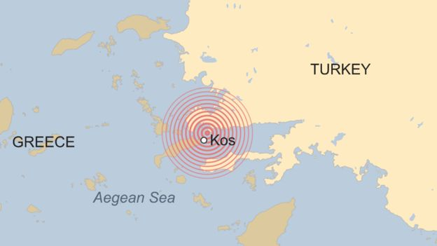
Seismisch gebied
Kos ligt in een van de seismisch actieve gebieden van de Middellandse Zee. Griekenland telt jaarlijks zo’n 20.000 aardbevingen, waarvan de meeste mild zijn.
Seismisch gebied, geschiedenis en wat je moet weten.

Kos ligt in een van de seismisch actieve gebieden van de Middellandse Zee. Griekenland telt jaarlijks zo’n 20.000 aardbevingen, waarvan de meeste mild zijn.

De bekendste aardbeving vond plaats in 1933. Bijna de hele stad Kos werd verwoest: ruim 90% van de gebouwen stortte in of raakte zwaar beschadigd.
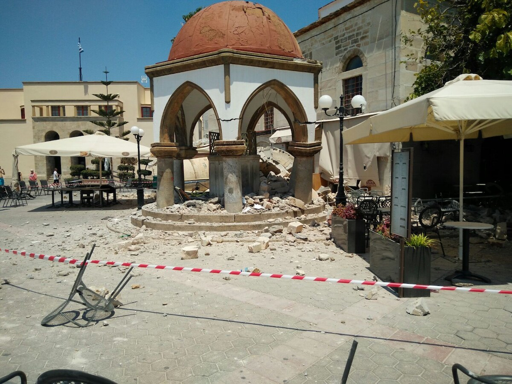
Op 21 juli 2017 trof een beving van 6,6 het eiland. Twee mensen kwamen om en zo’n 200 raakten gewond. De schade was beperkt vergeleken met 1933.
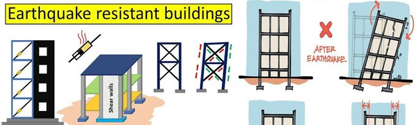
Moderne bouwvoorschriften maken nieuwe gebouwen beter bestand tegen aardbevingen.
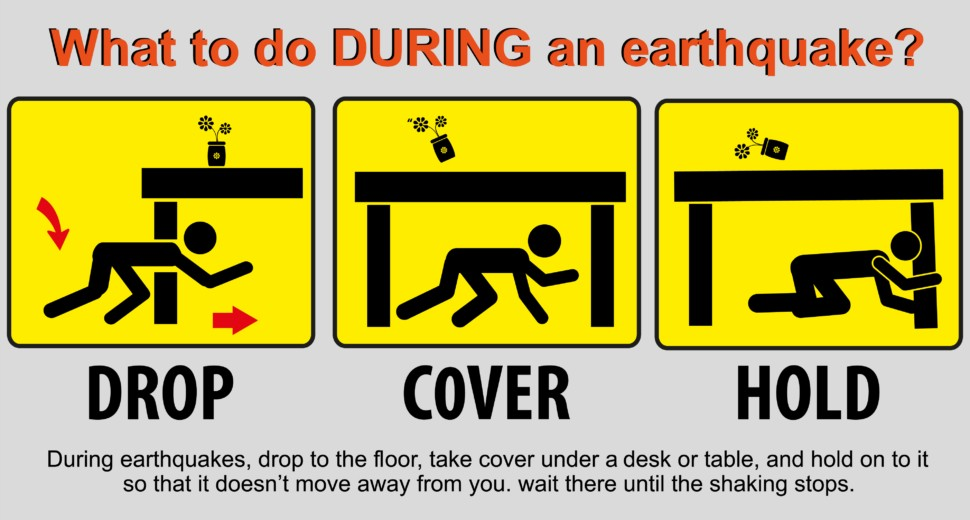
Grote bevingen komen gemiddeld eens per 70–80 jaar voor. De beving van 2017 ligt achter ons, dus de volgende grote aardbeving zal naar verwachting pas over ongeveer 60 jaar plaatsvinden.
15 foto’s van de grote aardbevingen die Kos heeft meegemaakt.
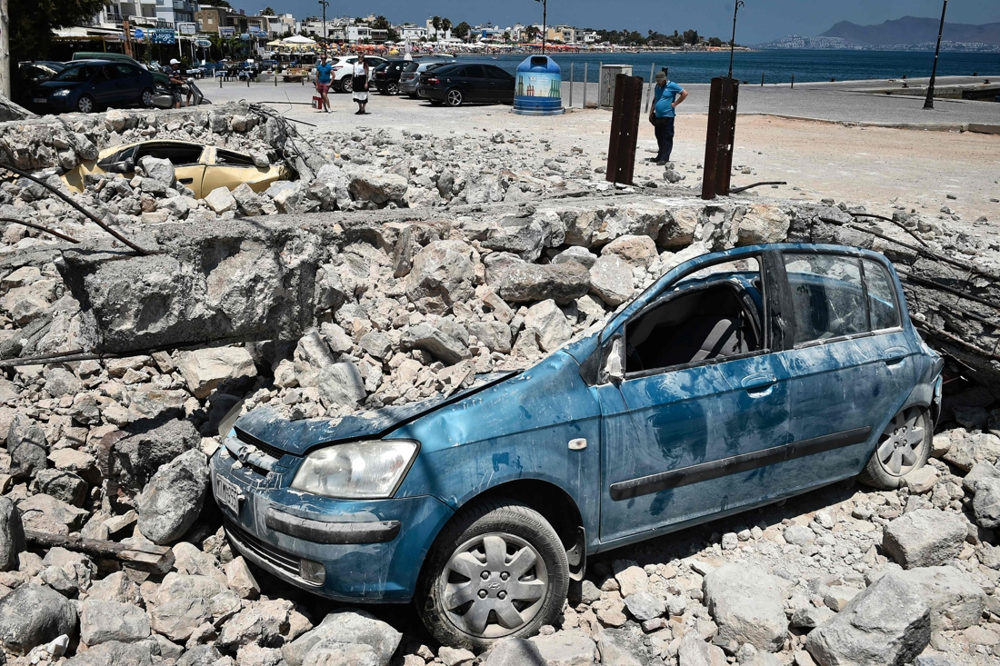
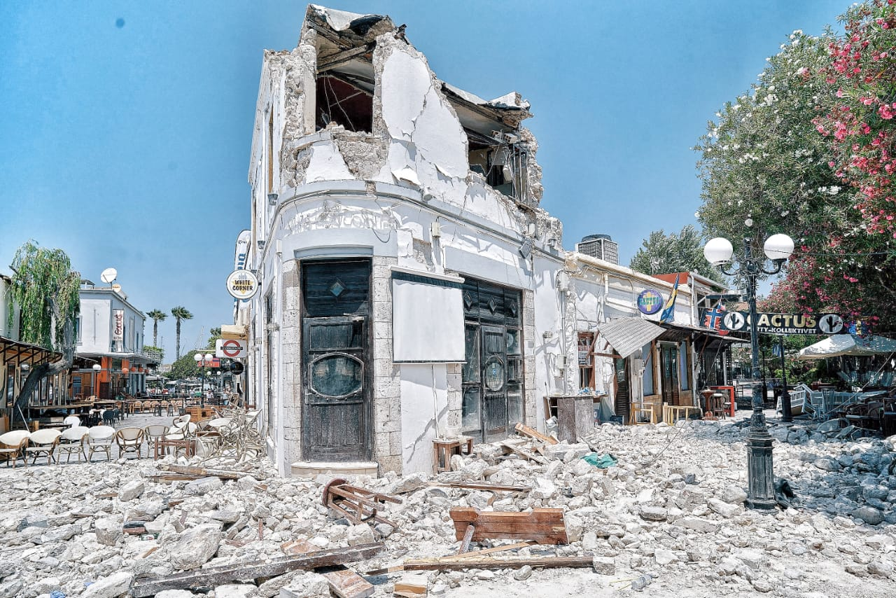
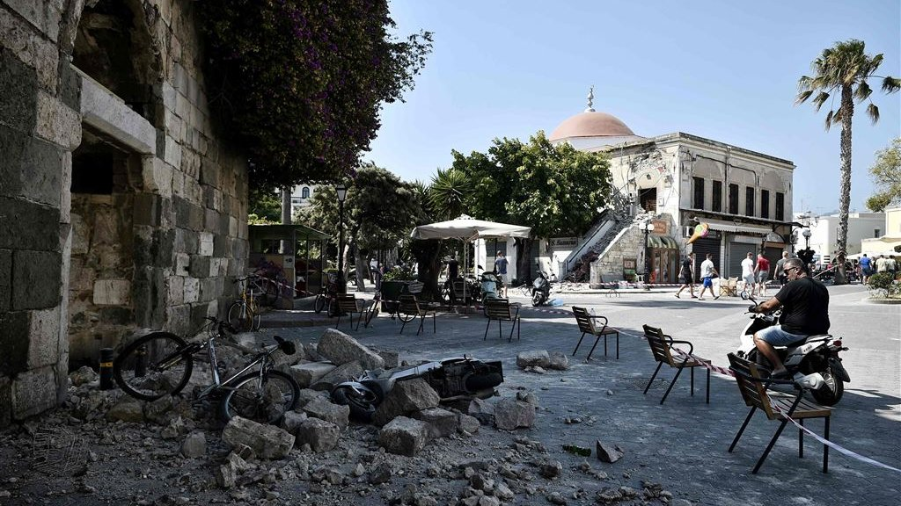
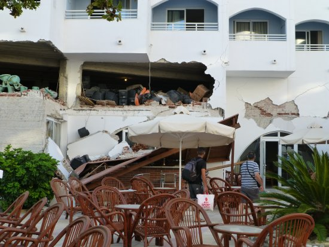
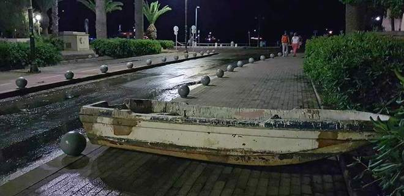
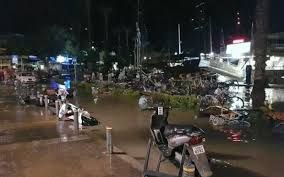
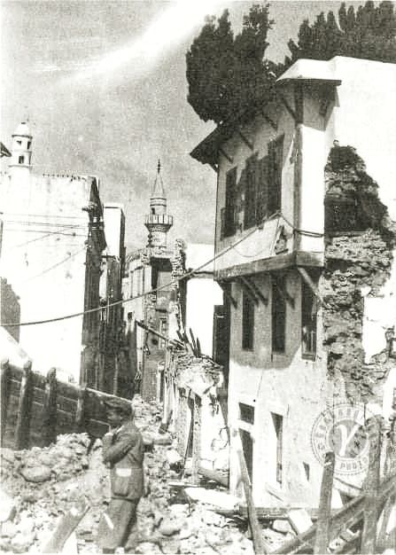
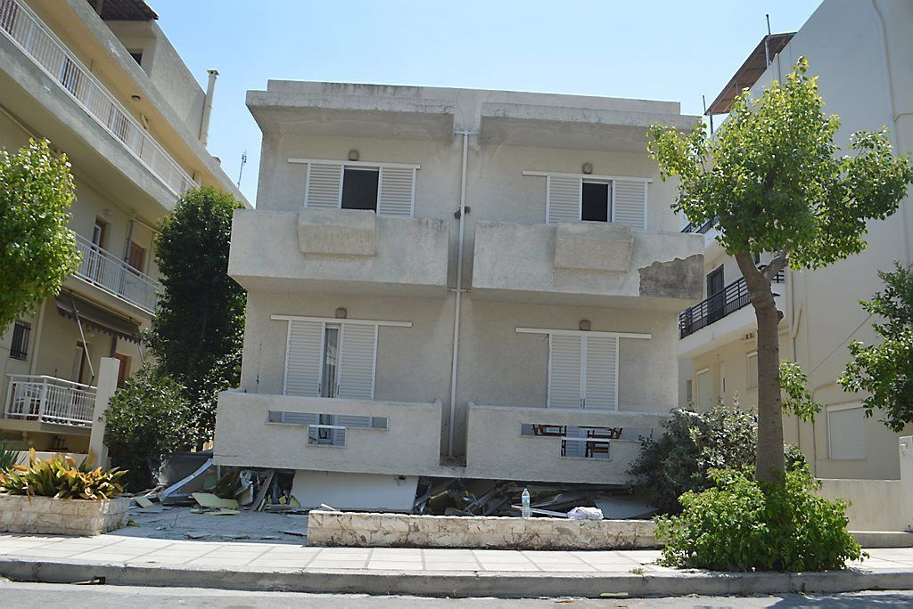
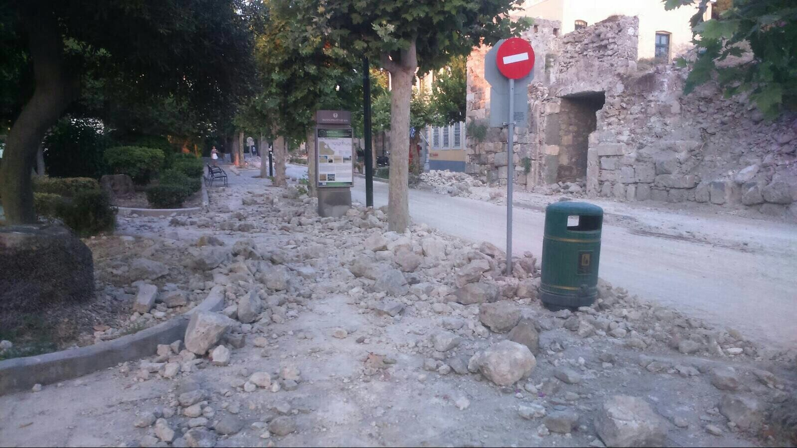
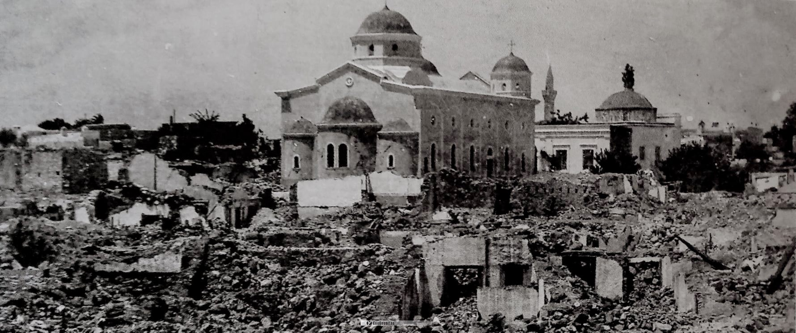
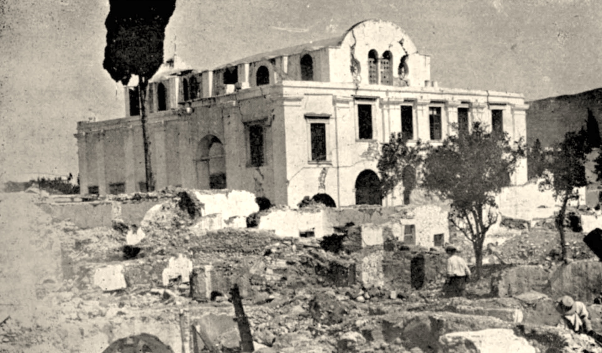
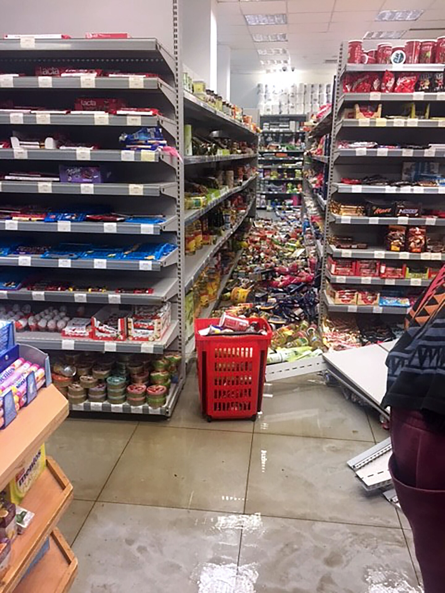
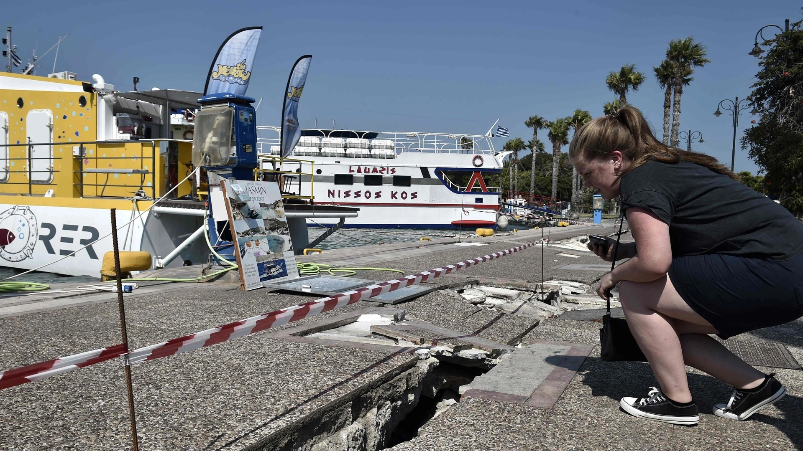
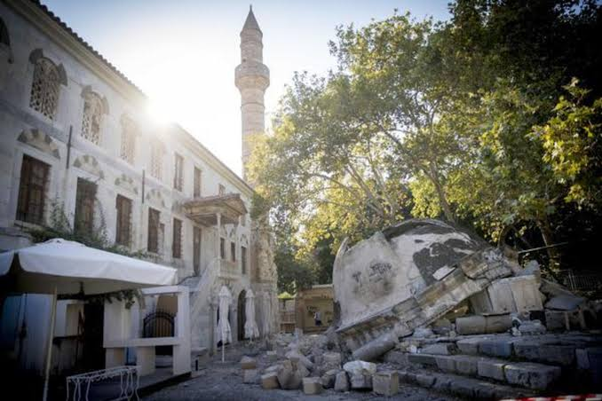
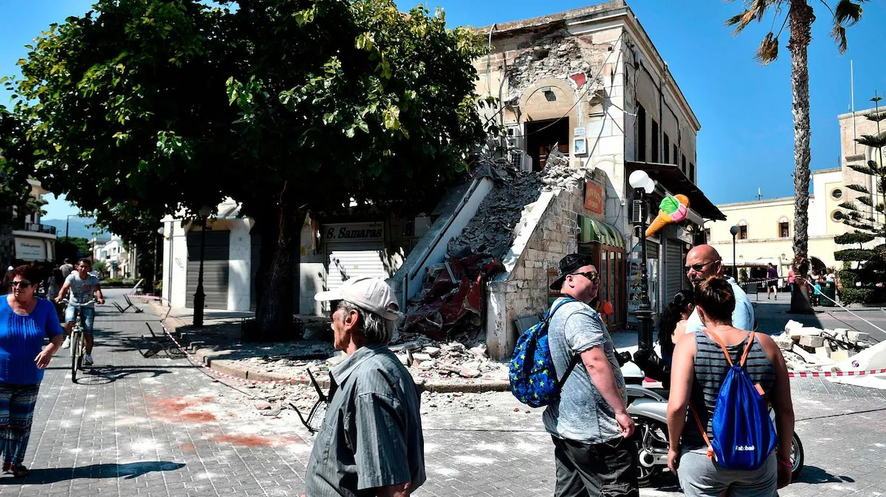
Seismic area, history and what you need to know.
Kos lies in a seismically active area. Most quakes are mild.
Almost the whole town was destroyed; over 90% of buildings were lost or badly damaged.
Magnitude 6.6. Two died, about 200 injured.
Modern buildings are designed to withstand earthquakes better.
The 2017 quake is behind us; the next major one is expected in about 60 years.
15 photos of the major earthquakes that hit Kos.
Seismisches Gebiet, Geschichte und Tipps.
15 Fotos der großen Erdbeben, die Kos getroffen haben.
Zona sismica, storia e consigli.
15 foto dei grandi terremoti che hanno colpito Kos.
Sismik bölge, tarih ve ipuçları.
Kos’u etkileyen büyük depremlerden 15 fotoğraf.
Zona sísmica, historia y consejos.
15 fotos de los grandes terremotos que afectaron a Kos.